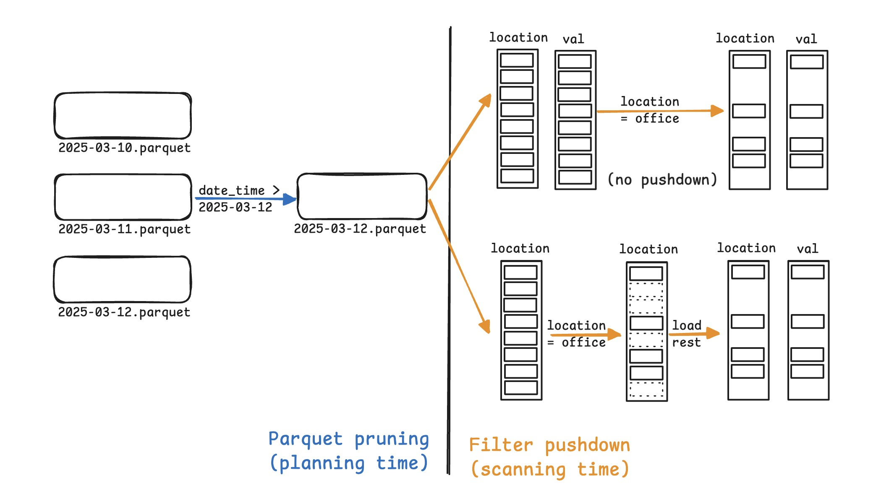
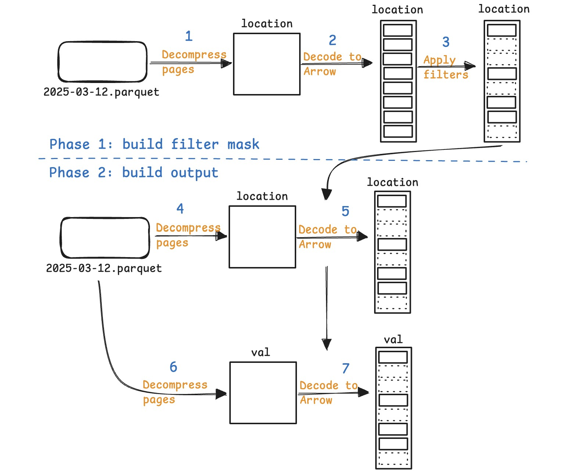
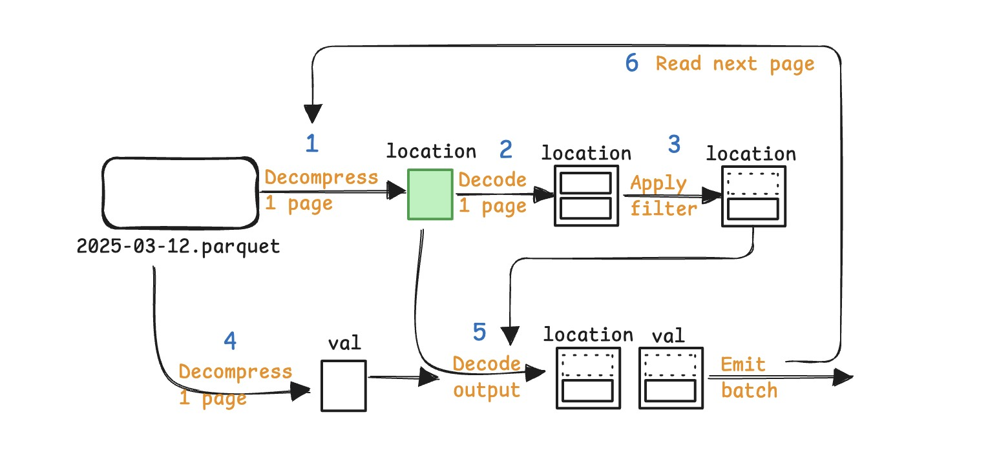
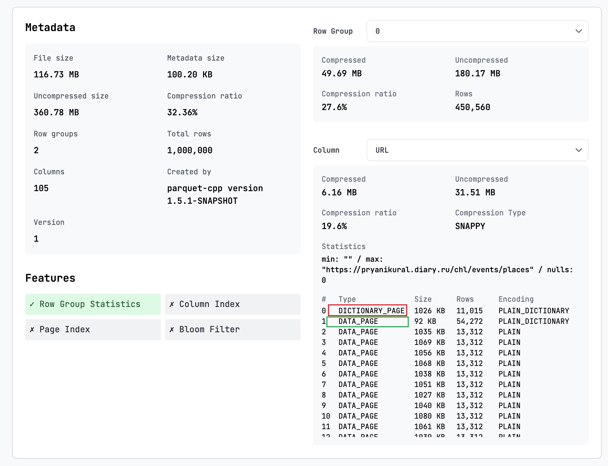
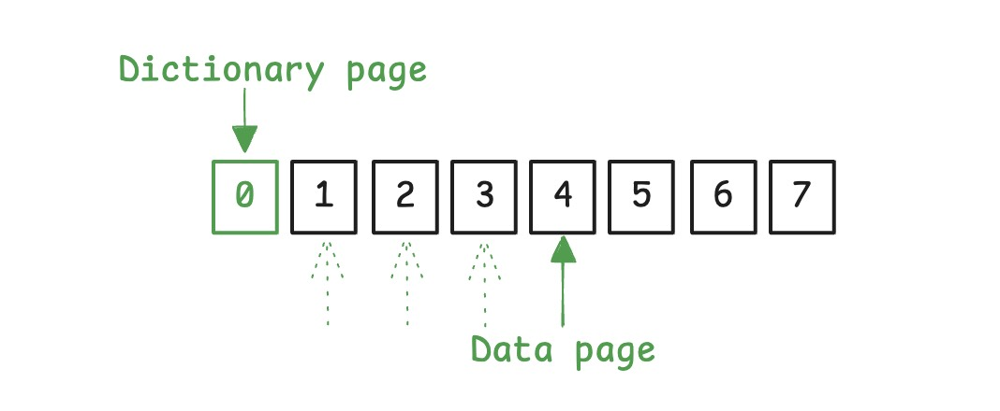

In the previous post, we discussed how DataFusion prunes Parquet files to skip irrelevant files/row_groups (sometimes also pages).
This post discusses how Parquet readers skip irrelevant rows while scanning data.
Why filter pushdown in Parquet?
Below is a query that reads sensor data with filters on date_time and location:
SELECT val, location
FROM sensor_data
WHERE date_time > '2025-03-12' AND location = 'office';
location='office' is evaluated. Filter pushdown is especially useful when the filter is selective, i.e., removes many rows.In our setup, sensor data is aggregated by date — each day has its own Parquet file. DataFusion prunes the unneeded Parquet files, i.e., 2025-03-10/11.parquet.
Once the files to read are located, the current default implementation reads all the projected columns (sensor_id, val, and location) into Arrow RecordBatches, then applies the filters over location to get the final set of rows.
A better approach is filter pushdown, which evaluates filter conditions first and only decodes data that passes these conditions. In practice, this works by first processing only the filter columns (like location), building a boolean mask of rows that satisfy our conditions, then using this mask to selectively decode only the relevant rows from other columns (sensor_id, val). This eliminates the waste of decoding rows that will be filtered out.
While simple in theory, practical implementations often make performance worse.
Why slower?
At a high level, the Parquet reader first builds a filter mask – essentially a boolean array indicating which rows meet the filter criteria – and then uses this mask to selectively decode only the needed rows from the remaining columns in the projection.
Let’s dig into details of how filter pushdown is implemented in the current Rust implementation of Parquet readers.

The filter pushdown has two phases:
Build the filter mask (steps 1-3)
Apply the filter mask to the other columns (steps 4-7)
Within each phase, it takes three steps from Parquet to Arrow:
Decompress the Parquet pages using generic decompression algorithms like LZ4, Zstd, etc. (steps 1, 4, 6)
Decode the page content into Arrow format (steps 2, 5, 7)
Evaluate the filter over Arrow data (step 3)
In the figure above, we can see that location is decompressed and decoded twice, first when building the filter mask (steps 1, 2), and second when building the output (steps 4, 5). This happens for all columns that appear both in the filter and output.
The table below shows the corresponding CPU time on the ClickBench query 22:
| Decompress | Decode | Apply filter | Others |
|---|---|---|---|
| 206 ms | 117 ms | 22 ms | 48 ms |
Clearly, decompress/decode operations dominate the time spent. With filter pushdown, we need to decompress/decode three times; but without filter pushdown, we only need to do this twice. This explains why filter pushdown is slower.
Highly selective filters may skip the entire page; but as long as we read one row from the page, we need to decompress/decode the entire page.
Attempt: cache filter columns
Intuitively, caching the filter columns and reusing them later could help.
But caching consumes prohibitively high memory:
We need to cache Arrow arrays, which are on average 4x larger than Parquet data.
We need to cache the entire column in memory, because in Phase 1 we build filters over the entire column, and only use it in Phase 2.
The memory usage is proportional to the number of filter columns, which can be unboundedly high.
Worse, caching filter columns means we need to read partially from Parquet and partially from cache, which is complex to implement and requires a radical change to the current implementation.
Feel the complexity: consider building a cache that properly handles nested columns, multiple filters, and filters with multiple columns.
Real solution
We need a solution that:
Is simple to implement, i.e., doesn’t require thousands of lines of code.
Incurs minimal memory overhead.
This section describes my <700 LOC PR (with lots of comments and tests) that reduces total ClickBench time by 15%, with up to 2x lower latency for some queries, no obvious regression on other queries, and caches at most 2 pages (~2MB) per column in memory.

The new pipeline interleaves the previous two phases into a single pass, so that:
The page being decompressed is immediately used to build filter masks and output columns.
We cache the decompressed page for minimal time; after one pass (steps 1-6), the cache memory is released for the next pass.
This allows the cache to only hold 1 page at a time, and to immediately discard the previous page after it’s used, significantly reducing the memory requirement for caching.
What pages are cached?
You may have noticed that only location is cached, not val, because val is only used for output. More generally, only columns that appear both in the filter and output are cached, and at most 1 page is cached for each such column.
More examples:
SELECT val
FROM sensor_data
WHERE date_time > '2025-03-12' AND location = 'office';In this case, we don’t cache any columns, because val is not used for filtering.
SELECT COUNT(*)
FROM sensor_data
WHERE date_time > '2025-03-12' AND location = 'office';In this case, we also don’t cache any columns, because the output projection is empty after query plan optimization.
Then why cache 2 pages/column instead of 1?
This is another real-world nuance regarding how Parquet layouts the pages.
Parquet by default encodes data using dictionary encoding, which writes a dictionary page as the first page of a column chunk, followed by the keys referencing the dictionary.
You can see this in action using parquet-viewer:

This means that to decode a page of data, we actually need to reference two pages: the dictionary page and the data page.
This is why we cache 2 pages per column: one dictionary page and one data page. The data page slot will move forward as we read the data; but the dictionary page slot always references the first page.

How does it perform?
Here are my results on ClickBench on my AMD 9900X machine. The total time is reduced by 15%, with Q23 being 2.24x faster, and queries that get slower are likely due to noise.
┏━━━━━━━━━━━━━━┳━━━━━━━━━━━━━┳━━━━━━━━━━━━━━┳━━━━━━━━━━━━━━━┓
┃ Query ┃ no-pushdown ┃ new-pushdown ┃ Change ┃
┡━━━━━━━━━━━━━━╇━━━━━━━━━━━━━╇━━━━━━━━━━━━━━╇━━━━━━━━━━━━━━━┩
│ QQuery 0 │ 0.47ms │ 0.43ms │ +1.10x faster │
│ QQuery 1 │ 51.10ms │ 50.10ms │ no change │
│ QQuery 2 │ 68.23ms │ 64.49ms │ +1.06x faster │
│ QQuery 3 │ 90.68ms │ 86.73ms │ no change │
│ QQuery 4 │ 458.93ms │ 458.59ms │ no change │
│ QQuery 5 │ 522.06ms │ 478.50ms │ +1.09x faster │
│ QQuery 6 │ 49.84ms │ 49.94ms │ no change │
│ QQuery 7 │ 55.09ms │ 55.77ms │ no change │
│ QQuery 8 │ 565.26ms │ 556.95ms │ no change │
│ QQuery 9 │ 575.83ms │ 575.05ms │ no change │
│ QQuery 10 │ 164.56ms │ 178.23ms │ 1.08x slower │
│ QQuery 11 │ 177.20ms │ 191.32ms │ 1.08x slower │
│ QQuery 12 │ 591.05ms │ 569.92ms │ no change │
│ QQuery 13 │ 861.06ms │ 848.59ms │ no change │
│ QQuery 14 │ 596.20ms │ 580.73ms │ no change │
│ QQuery 15 │ 554.96ms │ 548.77ms │ no change │
│ QQuery 16 │ 1175.08ms │ 1146.07ms │ no change │
│ QQuery 17 │ 1150.45ms │ 1121.49ms │ no change │
│ QQuery 18 │ 2634.75ms │ 2494.07ms │ +1.06x faster │
│ QQuery 19 │ 90.15ms │ 89.24ms │ no change │
│ QQuery 20 │ 620.15ms │ 591.67ms │ no change │
│ QQuery 21 │ 782.38ms │ 703.15ms │ +1.11x faster │
│ QQuery 22 │ 1927.94ms │ 1404.35ms │ +1.37x faster │
│ QQuery 23 │ 8104.11ms │ 3610.76ms │ +2.24x faster │
│ QQuery 24 │ 360.79ms │ 330.55ms │ +1.09x faster │
│ QQuery 25 │ 290.61ms │ 252.54ms │ +1.15x faster │
│ QQuery 26 │ 395.18ms │ 362.72ms │ +1.09x faster │
│ QQuery 27 │ 891.76ms │ 959.39ms │ 1.08x slower │
│ QQuery 28 │ 4059.54ms │ 4137.37ms │ no change │
│ QQuery 29 │ 235.88ms │ 228.99ms │ no change │
│ QQuery 30 │ 564.22ms │ 584.65ms │ no change │
│ QQuery 31 │ 741.20ms │ 757.87ms │ no change │
│ QQuery 32 │ 2652.48ms │ 2574.19ms │ no change │
│ QQuery 33 │ 2373.71ms │ 2327.10ms │ no change │
│ QQuery 34 │ 2391.00ms │ 2342.15ms │ no change │
│ QQuery 35 │ 700.79ms │ 694.51ms │ no change │
│ QQuery 36 │ 151.51ms │ 152.93ms │ no change │
│ QQuery 37 │ 108.18ms │ 86.03ms │ +1.26x faster │
│ QQuery 38 │ 114.64ms │ 106.22ms │ +1.08x faster │
│ QQuery 39 │ 260.80ms │ 239.13ms │ +1.09x faster │
│ QQuery 40 │ 60.74ms │ 73.29ms │ 1.21x slower │
│ QQuery 41 │ 58.75ms │ 67.85ms │ 1.15x slower │
│ QQuery 42 │ 65.49ms │ 68.11ms │ no change │
└──────────────┴─────────────┴──────────────┴───────────────┘
┏━━━━━━━━━━━━━━━━━━━━━━━━━━━━━┳━━━━━━━━━━━━┓
┃ Benchmark Summary ┃ ┃
┡━━━━━━━━━━━━━━━━━━━━━━━━━━━━━╇━━━━━━━━━━━━┩
│ Total Time (no-pushdown) │ 38344.79ms │
│ Total Time (new-pushdown) │ 32800.50ms │
│ Average Time (no-pushdown) │ 891.74ms │
│ Average Time (new-pushdown) │ 762.80ms │
│ Queries Faster │ 13 │
│ Queries Slower │ 5 │
│ Queries with No Change │ 25 │
└─────────────────────────────┴────────────┘Conclusion
Despite being simple in theory, filter pushdown in Parquet is non-trivial to implement. It requires understanding both the Parquet format and reader implementation details. The challenge lies in efficiently navigating through the dynamics of decoding, filter evaluation, and memory management.